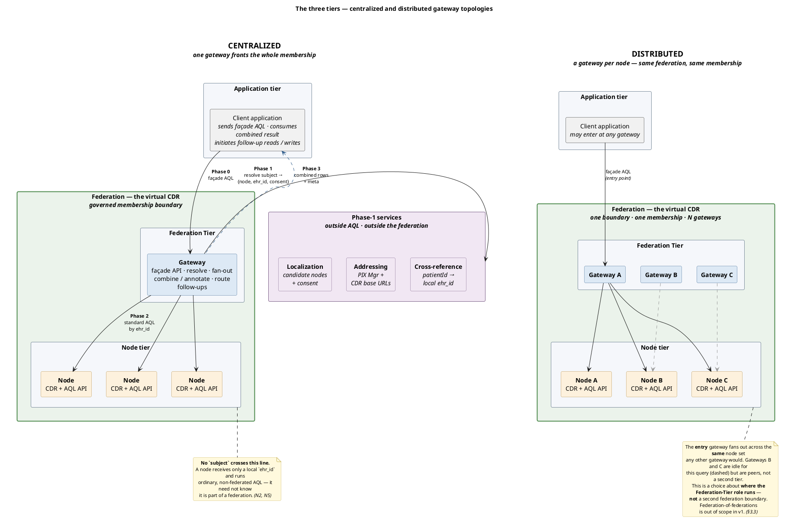

The News
Together with RSO Zuid-Limburg and the openEHR International SEC, we've been working on a specification for federating openEHR CDRs. The draft is now in its final two weeks of public comment. This post is the short version of why it exists and what it does, so you can decide whether the full thing is worth your time.
Spec and discussion: https://github.com/syntaric/openehr-federation-spec
Reference implementation you can run yourself: https://github.com/syntaric/openehr-federation-ref
The Problem
In a regional setup like Zuid-Limburg, patient data lives in several openEHR CDRs, one per care provider, and it stays there on purpose. Nobody wants a central copy of everything; that is a privacy problem and an ownership problem at the same time. But an application that needs the full picture of a patient still has to get it from somewhere.
Without a federation layer, that application has to know every CDR in the region, know the patient's local id in each of them, query them one by one and stitch the answers together itself. Every application, every time. That does not scale past the second app.
What the Spec Does
The spec defines a Federation Tier: a gateway that lets a client run one AQL query across multiple CDRs as if
they were a single repository. The client sends ordinary openEHR AQL to what looks like an ordinary openEHR REST
endpoint. There is no federation-specific syntax to learn, and the result comes back as a standard RESULT_SET
with some extra metadata.
The interesting part happens before the query goes anywhere. The gateway resolves the patient outside of AQL:
which providers hold data on this patient (localization), where their CDRs are (addressing), and what the patient's
local ehr_id is at each of them (cross-reference). The proposed bindings are IHE XCPD, mCSD and PIXm, with the
Dutch Generic Functions as a regional alternative. If you read our
post on Generic Functions, this is exactly where they slot in.
Each CDR then receives plain, non-federated AQL scoped to its own local ehr_id. A node does not need to know it is
part of a federation at all. The gateway combines the rows, tags each one with the endpoint it came from, and
reports per-node status in the response. Follow-up reads and writes on a specific record are routed back to the CDR
that owns it.
Where It Stands
Version 0.9.0 is a release candidate. Normative section has been built and tested against real openEHR CDRs in the reference implementation, but nothing is frozen. The Dutch specifics live in an informative annex, so another region can bring its own without touching the normative body.
If you run an openEHR CDR, build on one, or have opinions on how regional data exchange should work, this is the moment to say so. Open an issue, even for a half-formed thought. Discussion is the point of publishing a draft.